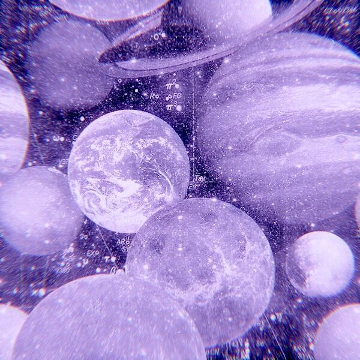

Purple is the color of royalty and a symbol of luxury. Purple dye is extremely difficult to come by in nature, hence the exclusiveness. There are many shades purple such as lilac, lavender, indigo, periwinkle, and plum. Purple is an amazing color and very pleasant to look at.
